En las ciudades dominan las casas, edificios, calles y carros, pero sobre todo domina una especie: el ser humano. Hay pocas plantas y animales que se adaptan a estas condiciones y muchos de ellos vienen de otros países.Una gran cantidad de camiones transportan alimento desde el campo y otros retiran el desperdicio que producimos. También el agua y la energía que utilizamos para la electricidad vienen muy de lejos.
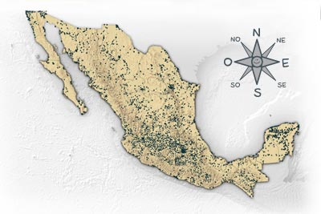
Fresno
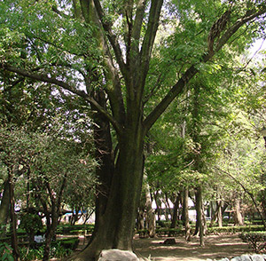
Soy uno de los árboles que vivimos en las ciudades. Mis parientes también viven en muchas partes del país, cerca de arroyos y ríos. En las ciudades damos refugio y alimento a mariposas y otros insectos, a gran variedad de pájaros y a las asustadizas lagartijas. Muchos otros árboles de las ciudades vienen de lugares lejanos como Australia, África y Asia.
Gorriones Ingleses
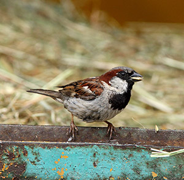
Desde mediados de 1800 fuimos traídos de Inglaterra a Estados Unidos y Canadá. De ahí hemos viajado a muchos otros lugares del continente y ahora somos una de las especies más comunes en las ciudades. Al ser más abundantes competimos con otras especies de pájaros por alimento, por nidos.
Abejas
Somos insectos sociales originarios de Europa, África y Asia. En cada colmena vivimos tres tipos de individuos: las abejas obreras, los zánganos y la reina. Las primeras somos las que trabajamos y los demás se reproducen. Nos alimentamos de polen y néctar de las flores y al mismo tiempo somos responsables que muchas flores produzcan frutos. ¡Somos muy importantes!
Paloma
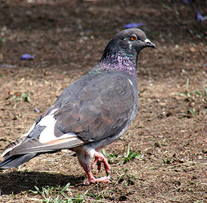
Soy originaria de Europa y Asia. Nuestro color original era el gris con el cuello de colores morado y verde metálico y dos barras negras en las alas, pero actualmente puedes encontrarnos de muchos colores y formas. Vivo en grandes grupos y me alimento de semillas, pero en la ciudad mi dieta es más amplia.
Gato
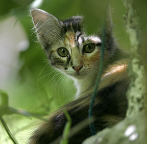
Fui domesticado hace miles de años en Asia y desde entonces soy una mascota muy popular. Soy carnívoro y aunque me alimentan con croquetas y comida especial para gatos, cuando puedo me encanta salir a cazar ratones y pajaritos.
Hormigas
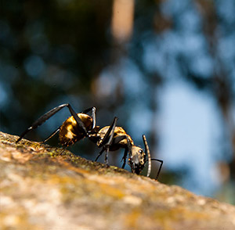
Somos insectos sociales que vivimos en hormigueros, parecidos a ciudades enterradas. Nuestras grandes agrupaciones nos permiten ser muy eficientes en obtener alimento y defendernos de nuestros enemigos ¡Trabajamos siempre en equipo! Algunas especies somos nativas y otras hemos sido introducidas de otros países accidentalmente.
Productos mexicanos
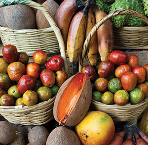
Las frutas, verduras y otros productos que encuentras en abarrotes y supermercados venimos del campo. Para desarrollarnos necesitamos un ambiente sano, con suelo rico, agua disponible, y algunos insectos que ayuden a que nuestras flores produzcan frutos. ¿Sabes de dónde venimos cuando nos consumes?
Ser humano
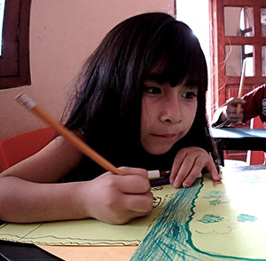
Soy una de las especies más abundantes en las ciudades y en el mundo. Mis parientes han ido cambiando la naturaleza y convirtiéndola en ciudades con edificios, calles, y carros. Utilizamos gran cantidad de energía y agua y producimos muchos desperdicios. Me alimento de plantas y animales muertos que son traídos del campo y muchas veces de países lejanos.
Perro
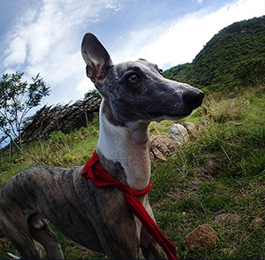
Aunque no lo creas, soy pariente cercano del lobo. También soy carnívoro pero me he especializado en atrapar croquetas. La gran variedad de razas de perros son el producto de la selección que han hecho los humanos de nuestro tamaño, color, pelo, y comportamiento.
Moscas
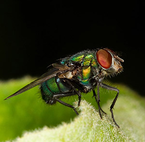
Vivimos en todo el mundo, al igual que los seres humanos. Podemos detectar malos olores desde muy lejos y llegar rápidamente a donde se producen para ver qué podemos comer. Debido a nuestros hábitos transmitimos gran cantidad de enfermedades.
Cucaracha
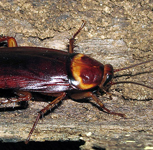
Soy un insecto de cuerpo aplanado con grandes antenas. Soy omnívoro, es decir me alimento de todo. La mayoría de mis parientes viven en los bosques y selvas, pero unas pocas especies preferimos la acción en la ciudad.
Rata de ciudad
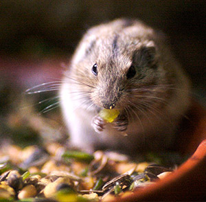
Al igual que la rata negra y los ratones de casa, somos roedores originarios de Asia. Desde hace mucho tiempo empezamos a subirnos a los barcos y a viajar por todo el mundo. Somos tan exitosas como los humanos y los seguimos muy cercanamente a todas partes para utilizar sus desperdicios y sí que producen basura.